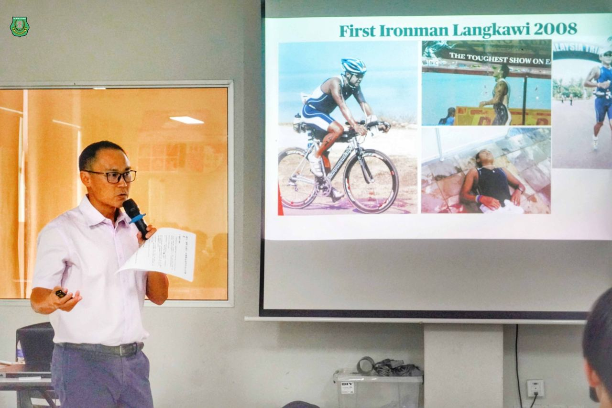
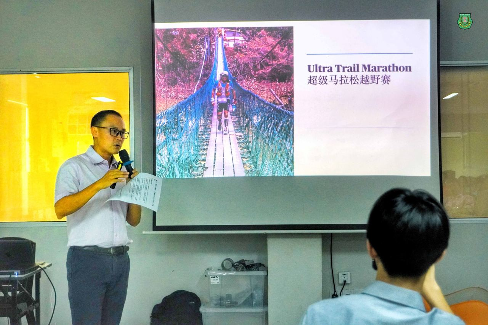
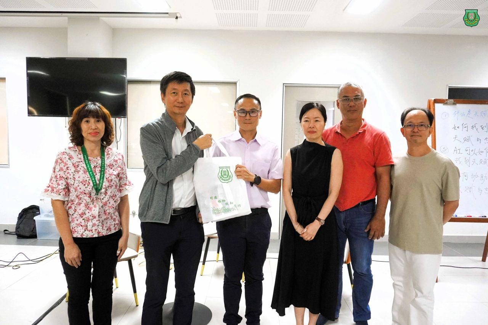
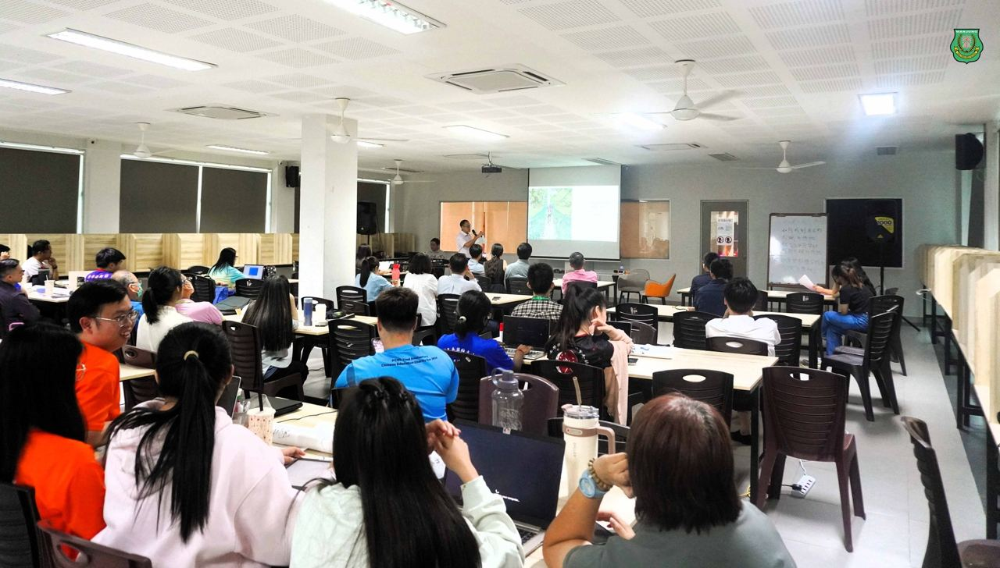
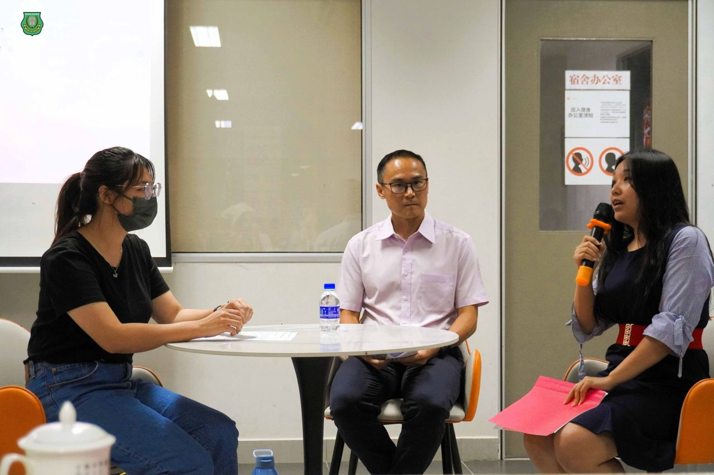
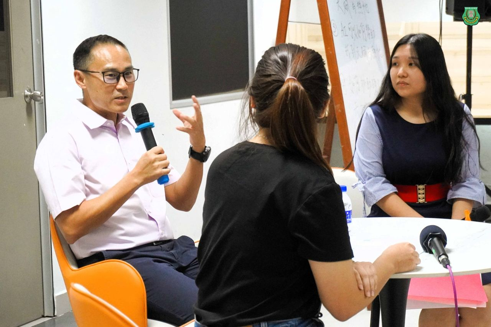
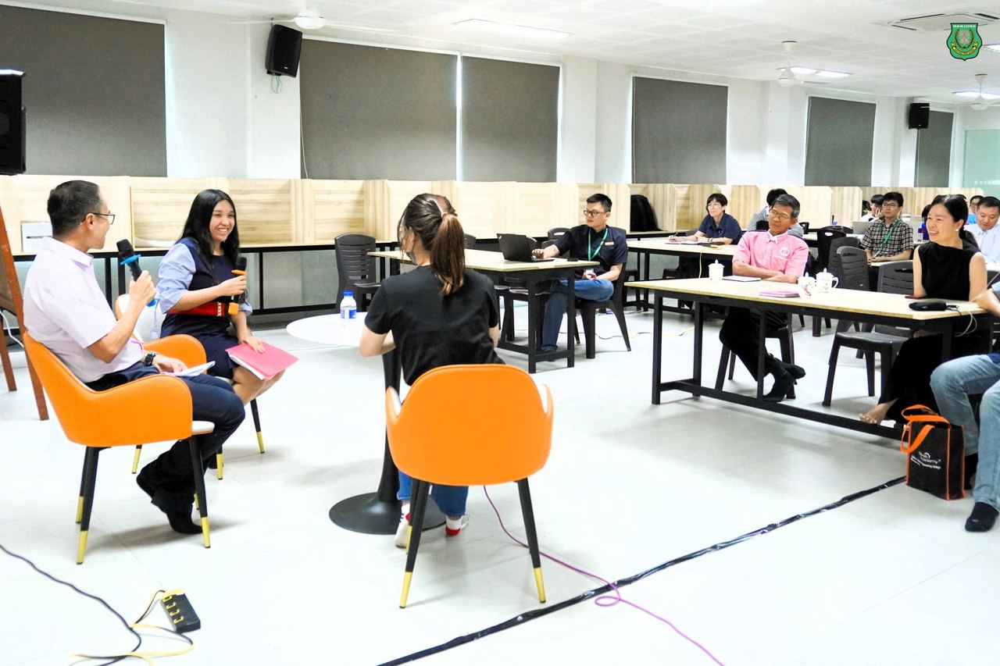
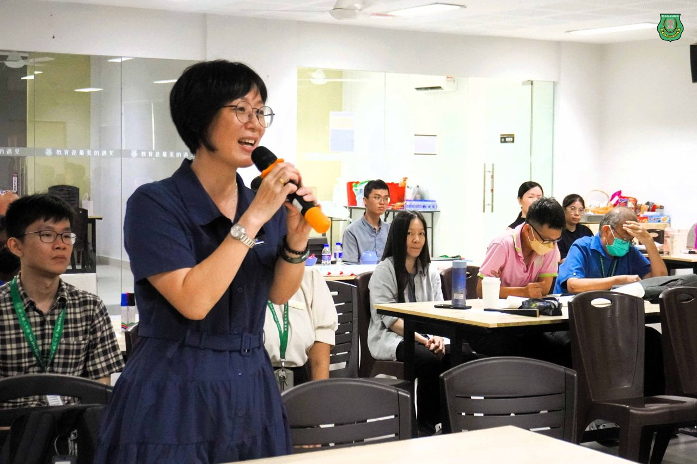

从极地马拉松谈教育初心
从极地马拉松谈教育初心
胡恩林董事长“铁人精神”讲座
点燃教师教育热忱
南华独中"2025共识营"邀请深斋中学董事长、极地马拉松铁人胡恩林先生，为今届共识营“热忱与天赋讲座”担任其中一位分享人。这位横越纳米布沙漠、智利阿他加马、芬兰雪原甚至南极冰地的马拉松挑战者，带着满身风霜却热忱不减的初心，在南华独中讲述了一场题为“铁人精神与教育热忱”的讲座，为教育界注入前所未有的动力与思考。
—极地奔跑者的教育观—
“跑在零下40度的雪地里，每一步都可能陷入不归路。但正是在这种荒凉里，我看清了自己真正要走的方向。”胡恩林以一张张极地照片，揭开他的演讲。他不仅是深斋中学的董事长，更是马来西亚少数完成三场极地马拉松的选手。
然而，他想谈的不是马拉松的荣耀，而是背后那一股支撑他跨越极限的教育热忱。
“天赋给我起点，热忱决定我能否完成旅程。这跟教育是一模一样的。”他将极地经验比喻为教师的日常——孤独、漫长、充满不确定，却因热爱而坚持。
—铁人精神的核心：坚持，不是完美—
胡董事长坦言，自己并非从小就是运动天才。他回忆2018年首次挑战纳米布沙漠，背包过重、腹泻不止、沙地奔跑……“我没有想赢，我只是想不放弃。”
他说，所谓“铁人精神”，并不是不流泪不喊累，而是在每一次快要崩溃的时候，对自己说：“再走一步，就会有不同。”这种精神，也贯穿于他的教育理念。作为独中董事，他多次提到教育者的艰辛与不屈都是一部可歌可泣的史诗，每位在华文教育上坚持的教育工作者都能媲美任何一位极地马拉松的斗士。
—教育者秉持“走在前面”的热忱—
讲座中，胡恩林并未将“热忱”挂在嘴上，而是用行动诠释。他曾在珠穆朗玛峰大本营受伤，停训半年，却仍在隔年挑战南极极地赛。他用实际故事告诉与会者：“无论进行何种活动，都必须要保持热忱，马拉松和教育都一样。”这句话引发现场不少老师的反思，教师们在互动环节时纷纷积极提问，继续在热忱的话题上作更深度的交流与探讨，仿佛老师们不只听了一场讲座，更像是共同跑完了一段心灵马拉松。
讲座结束后，南华独中董事长颜登逸先生赠送由学生手工制作的本地土产以表敬意，并由董事总务何添胜、董事副总务林道祥、校长陈丽冰博士以及家联主席叶燕妮女士陪同见证。







